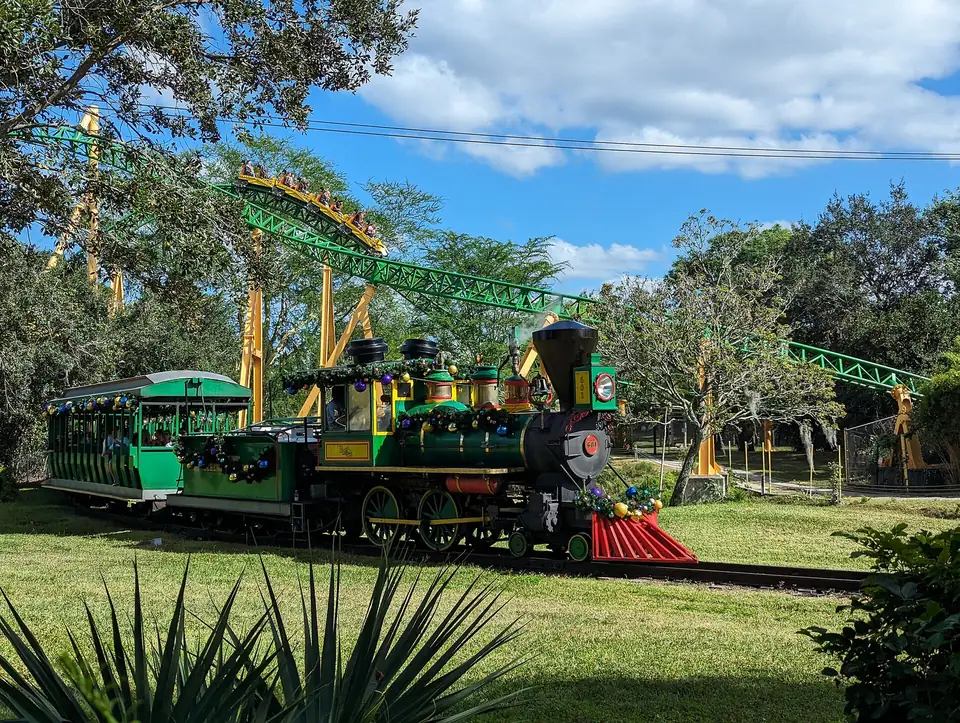

Busch Gardens Tampa Bay, Florida: an animal theme park with 200+ species and big roller coasters, plus the Adventure Island water park
Busch Gardens Tampa Bay: unlimited visits through 2027 for $129.99 a person, plus the Adventure Island water park at no extra cost
- Only for 3+ park days
- Listed until December 31, 2026
- Pays off from day 3
- No child price shown
- Parking from $34
- Tax and fees extra
AI research contributor: Miles Rowan
Our verdict: Only worth it if you will go on 3 or more days before the end of 2027; for 1 or 2 days, day tickets or the Two-Day Two Park ticket cost less.
Best for: Families who will spend three or more days at Busch Gardens before the end of 2027, such as Tampa Bay–area families or families on a longer Florida trip.
Not for: A one- or two-day visit: Busch Gardens sells day tickets online from $61.99 and a Two-Day ticket for $106 (ages 3+).
Saves: money from your 3rd day. Per person, Busch Gardens lists the Two-Day Two Park ticket at $106, the Three-Day, Three Park ticket at $135 and this unlimited card at $129.99; three of its cheapest online day tickets ($61.99 each) also cost more than the card.
Trip cost: we have no checked price for a family of 4. The card is priced per person and the offer page shows no child price, so plan on one card for each of you aged 3 and up, plus tax and service fees (not included), parking and your trip to Tampa (for example flights from New York City, which we have not priced).

What a family of 4 gets
Example family of 4: 2 adults and 2 kids aged 4 and 8 (the offer page shows no child price, so each of you likely needs a card; Busch Gardens says kids 2 and under need no ticket).
- Unlimited Busch Gardens Tampa Bay visits for each person with a card, from the day you buy through December 31, 2027.
- Adventure Island water park visits through October 24, 2027, on the Busch Gardens + Adventure Island card, which costs the same $129.99.
- Blocked days in 2027: 8 at Busch Gardens (including March 12 and 27 and July 4) and 7 days at Adventure Island from May 30 to July 24; no 2026 blockout dates are listed.
- Each card cannot be refunded or passed on, and it renews automatically.
Is it a good deal?
- Buy it if you will go on three or more days before the end of 2027; for one or two days, a day ticket (from $61.99 online, date-specific) or the Two-Day ticket ($106, ages 3+) costs less.
- Busch Gardens' tickets page also sells a Three-Day, Three Park ticket for $135, more than one Fun Card.
- Busch Gardens' pricing guide (no date shown; read October 30, 2026) lists the Fun Card at $129.99 (gate price $148.99) and Bronze annual passes from $168 a year.
The catch
- No child price is shown, so each family member aged 3 and up likely needs their own card.
- Parking is not included (from $34, per the FAQ), and tax and service fees are extra.
- Howl-O-Scream and other select special events are not included, and the card renews automatically: check that setting before you pay.
How to get it
- Buy online in advance on Busch Gardens' Fun Card page; the $129.99 price is not sold at the park, and no purchase deadline is stated.
- Choose the Busch Gardens + Adventure Island card: it costs the same $129.99.
- Price a card for each family member at checkout, check your dates against the 2027 blockout dates (Busch Gardens: March 12 and 27, July 4 and others in Full terms), add parking, and check the automatic-renewal setting.
Go to the Busch Gardens Tampa Bay Fun Card page (terms checked October 30, 2026).
What kids can do there
- For younger kids: Wild Oasis has interactive play areas.
- See more than 200 animal species, including lions, tigers, giraffes and gorillas, and the lions and hyenas at Lion & Hyena Ridge.
- Big coasters such as Iron Gwazi, Cheetah Hunt, SheiKra and Montu for older kids and teens (check height rules on Busch Gardens' site).
- Christmas Town runs on select nights from November 13 to January 4, 2027; Busch Gardens lists it among the events a Fun Card gets you into.
From Busch Gardens Tampa Bay "10 reasons to get a Fun Card" page, checked October 30, 2026. This is what Busch Gardens Tampa Bay says; we have not visited.
Pros and cons
Pros
- One per-person price covers unlimited visits until the end of 2027.
- Adventure Island water park is included at no extra cost on the combined card.
- From three days, it costs less than Busch Gardens' own Three-Day ticket ($135).
Cons
- No child price is shown, so a family of 4 buys a card for everyone aged 3 and up.
- Parking, tax and service fees are extra, and the card is non-refundable and renews automatically.
- Blockout dates include July 4 and spring dates in March 2027.
Full terms
Show all 12 terms from the offer page
| Term | What the official page says |
|---|---|
| Headline | Buy 2027 and get the rest of 2026 plus Adventure Island free. |
| Price shown | Busch Gardens only: $129.99 each (also shown: $148.99). Busch Gardens + Adventure Island: $129.99 each (also shown: $210.99). "Discounted price applies to online advance purchases only and is not available at the park." Service fees and taxes not included. |
| Parks | Busch Gardens Tampa Bay; the Busch Gardens + Adventure Island card adds the Adventure Island water park. |
| Travel window | Busch Gardens: unlimited visits now through December 31, 2027. Adventure Island: through October 24, 2027. |
| Book by | No purchase deadline is stated. Our reading: the free rest-of-2026 visits end December 31, 2026. |
| Blockout dates, Busch Gardens 2027 | March 12 and 27; June 26; July 4; November 20; December 23, 25 and 26. The page lists no 2026 blockout dates. |
| Blockout dates, Adventure Island 2027 | May 30; June 12 and 26; July 3, 10, 17 and 24. |
| Who can buy | US, Canadian and Puerto Rico residents; Florida residency is not required. |
| Child ages | No child price is stated on the Fun Card page. Busch Gardens' tickets page: "Children ages 2 & under do not require a ticket for entry." |
| Not included | Parking (the FAQ says parking starts at $34), select special events (including Howl-O-Scream), and food and merchandise discounts. |
| Card rules | Non-transferable and non-refundable; not valid with other discounts or special offers; other restrictions apply; subject to change without prior notice; the page lists automatic renewal as a feature. |
| Prices on Busch Gardens' tickets page and pricing guide, for comparison | Tickets page (read October 30, 2026): Single-Day Ticket from $61.99 each (date-specific; also shown $150.99); Two-Day Two Park Ticket $106 (ages 3+, $53 a day); Three-Day, Three Park Ticket $135 ($45 a day, any combination of its theme parks). Pricing guide (no date shown; read October 30, 2026): Single-Day Ticket starting at $61.99 (gate price $150.99); Fun Card $129.99 (price at gate $148.99); Bronze annual passes from $168 a year. Ticket prices vary by date. |
Unclear on the offer page:
- The Fun Card page shows $148.99 and $210.99 next to the $129.99 price without saying what they are; Busch Gardens' pricing guide calls $148.99 the Fun Card's gate price.
- No child price is shown on the Fun Card page, so it is not clear whether children 3 and up pay the same.
- No purchase deadline is shown; the free rest-of-2026 visits cannot run past December 31, 2026, so we list that as the latest date this bonus can matter.
- Which parks the Two-Day Two Park and Three-Day, Three Park tickets cover is not listed on the tickets page ("any combination of our theme parks"); Adventure Island is a seasonal water park, so check its operating calendar for your dates.
- How automatic renewal works and how to turn it off is not explained on the offer page.
Official page, checked October 30, 2026: Busch Gardens Tampa Bay Fun Card page.
Sources and how we check
- The offer terms: Busch Gardens Tampa Bay Fun Card page, checked October 30, 2026.
- What Busch Gardens Tampa Bay is, where it is and what families can do there: Busch Gardens Tampa Bay "10 reasons to get a Fun Card" page, checked October 30, 2026.
- Day, Two-Day and Three-Day ticket prices used for the comparison and the free-under-3 rule: Busch Gardens Tampa Bay tickets page, checked October 30, 2026.
- The Fun Card gate price and annual pass prices used for the comparison: Busch Gardens Pricing Guide page (no date shown), checked October 30, 2026.
Every term was read on the company's own pages on the dates shown. We have not booked this offer or been there ourselves. "Family of 4" notes are our reading of the terms, not a quote. We show a trip price only when we saw one on the official site for a named family and named dates. Prices and availability change: check live before you book.